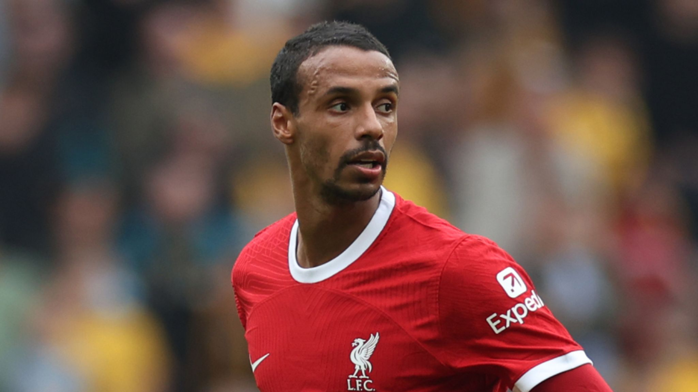
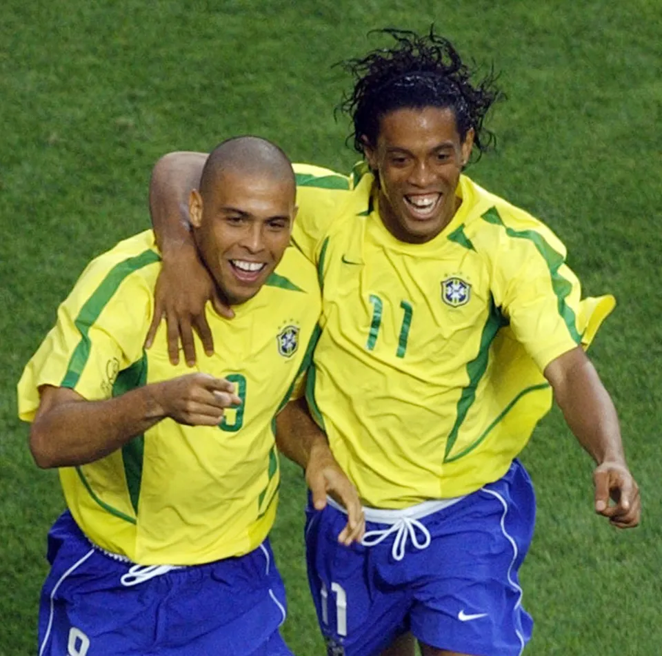

The cameroonian CB who was amazing alongside liverpool legend VVD!
Matip began his professional career with Schalke 04 in 2009, and was part of their teams that won the DFB-Pokal and DFL-Supercup in 2011.Then later moving onto liverpool.
Matip facts
Early Career: Started at Schalke 04, winning the DFB-Pokal and DFL-Supercup in 2011.
Liverpool Transfer: Joined Liverpool on a free transfer in 2016, becoming a vital part of Jürgen Klopp's defense.
Major Trophies: Won the Champions League (2019), UEFA Super Cup (2019), Premier League (2019-20), FA Cup (2022), and League Cup (2022) with Liverpool.
2019 Champions League Final: Played a crucial role, including assisting Divock Origi's goal in the final against Tottenham.

My Cool Page Title
Football
Everyone can agree Football is the greates sport of all time with many great players and one of them is
Ronaldo Fenomeno.
Ronaldo Fenômeno is a Brazilian soccer legend known for his incredible talent, two World Cup wins, and overcoming serious
knee injuries.
Ronaldo facts
Early Career and World Cups: Ronaldo began his career in Brazil and was part of the 1994 World Cup-winning squad at just 17 years old. He won his second World Cup in 2002, finishing as the tournament's top scorer with eight goals.
Nicknames: He earned the nickname "Il Fenomeno" in Italy, and was also called "Dadado" by his brother and "Ronaldinho" (Little Ronaldo).
World Record Transfers: Ronaldo broke the world transfer record twice, first moving to PSV in 1994, and then being sold for a record-breaking $27 million to Inter Milan in 1997.
Injuries and Comeback: He suffered a major knee injury in 1999 that sidelined him for nearly two years. He made a stunning return, leading Brazil to the 2002 World Cup victory. This comeback earned him FIFA World Player of the Year and the Ballon d'Or in 2002.
International Records: He is Brazil's third-highest all-time goalscorer, with 62 goals in 98 matches. He also became the first player to win the FIFA World Player of the Year award twice in a row.

Ronaldo and Ronaldhino for brazil.
Ronaldo getting tackled by maldini and cannavaro at the same time!!
Everyone can agree Football is the greates sport of all time with many great players and one of them is
Ronaldo Fenomeno.
Ronaldo Fenômeno is a Brazilian soccer legend known for his incredible talent, two World Cup wins, and overcoming serious
knee injuries.
Ronaldo facts
Early Career and World Cups: Ronaldo began his career in Brazil and was part of the 1994 World Cup-winning squad at just 17 years old. He won his second World Cup in 2002, finishing as the tournament's top scorer with eight goals.
Nicknames: He earned the nickname "Il Fenomeno" in Italy, and was also called "Dadado" by his brother and "Ronaldinho" (Little Ronaldo).
World Record Transfers: Ronaldo broke the world transfer record twice, first moving to PSV in 1994, and then being sold for a record-breaking $27 million to Inter Milan in 1997.
Injuries and Comeback: He suffered a major knee injury in 1999 that sidelined him for nearly two years. He made a stunning return, leading Brazil to the 2002 World Cup victory. This comeback earned him FIFA World Player of the Year and the Ballon d'Or in 2002.
International Records: He is Brazil's third-highest all-time goalscorer, with 62 goals in 98 matches. He also became the first player to win the FIFA World Player of the Year award twice in a row.
Ronaldo and Ronaldhino for brazil.
Ronaldo getting tackled by maldini and cannavaro at the same time!!